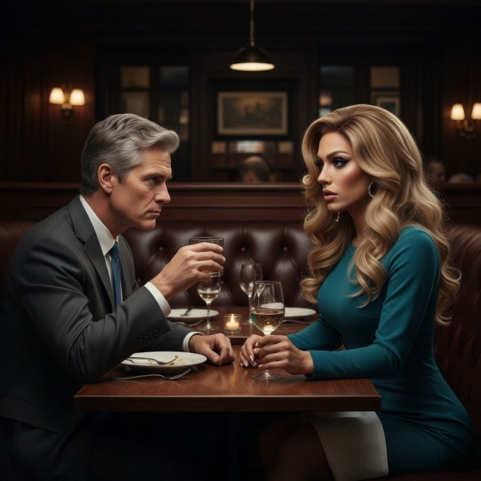

The trick to managing a political campaign is predicting the moment when the bomb goes off. Every campaign has explosive moments-the challenge isn't preventing them, it's calculating how much time you have to prepare for the detonation. If you time it right, you can make sure your candidate is nowhere nearby to catch any stray shrapnel.
Standing behind Governor Fenstemaker at the podium in the Capitol press room, watching him introduce Michael Rivera as our new lieutenant governor candidate, it felt like we were lighting a very long fuse.
"Michael Rivera brings both executive experience and legislative expertise," Beau announced, his voice carrying the stentorian authority that had won him his first election. I stood slightly behind him, the plum sheath dress clinging to every artificial curve, ensuring that every photo of the two new running mates would have a splash of jewel-toned decorative flair positioned just so. "His record on education reform and small business development makes him the ideal partner for my second term."
Two weeks earlier, this announcement would have been impossible. Rivera had been resistant, citing legislative commitments and concerns about the campaign's direction. Casey had sent me to change his mind-armed with thick folders of policy positions, wearing a smile and a burgundy wrap dress that made my synthetic cleavage impossible to ignore.
Our first meeting had been purely professional. Rivera's district office, fluorescent lights, bad coffee, and three hours of healthcare policy discussion. But he'd actually read my white papers-not just the executive summaries, the full analyses with footnotes and methodology appendices. When I'd mentioned an obscure CDC study on rural health outcomes, he'd pulled up his own copy, already annotated.
"You wrote the infrastructure framework too," he'd said during our second meeting. Not a question. "The financing structure has your fingerprints all over it."
"Most people don't recognize policy fingerprints."
"Most people aren't paying attention."
By the fourth meeting, the dynamic had shifted. He still engaged with the intellectual content, but now he asked where I'd studied, what made me choose politics, whether I missed anything from before my transition. Questions that felt personal wrapped in professional interest.
"Did you always know?" he'd asked during our last pre-announcement meeting. "About being trans?"
The question every cis person eventually asked, thinking they were the first. "It's complicated," I'd said, the non-answer I'd perfected.
"Most real things are."
Now he stood beside Beau, deftly fielding questions about his vision for the state and highlighting the numerous ways his personal beliefs conveniently dovetailed with Beau's. When Channel 9 asked about his legislative priorities, he gestured toward me. "I've been impressed by the exceptional staff here, particularly their policy expertise. This administration understands that good governance requires both vision and detailed execution."
Beau's jaw tightened almost imperceptibly. I knew that look-the territorial assessment of a man who'd just noticed another man noticing his things. Not that I was his, exactly. But in Beau's mind, everything in his administration existed as an extension of his will.
The press conference ended abruptly-Beau's raised hand cutting off questions, my practiced "thank you all for coming," the synchronized turn toward the exit that Casey had made us rehearse three times that morning.
"Outstanding work bringing him on board," Derek said afterward while reporters packed equipment. "I hear your one-on-one sessions with him made the difference."
"Just doing my job," I said, gathering my notes while my heels sent complaints up my calves. "Casey, can I borrow you for a second?"
"Of course," she answered, but she was already lifting her phone to her ear. "Parker. Wait, what? Slow down. What do you mean the union is threatening to pull their endorsement?" Her attention split between the call and scrolling through emergency emails on her tablet. I tried to catch her eye again, but she was deep in damage control, giving me a distracted nod as she hurried back to what used to be my office.
Rivera approached, smiling with the confidence of someone who'd just secured exactly what he wanted. "I'd like to discuss the education bill amendments. Perhaps over coffee?"
Before I could respond, Beau materialized beside me like summoned smoke. "The Herald needs clarification on our infrastructure position, Yvonne."
"Of course, Governor."
Rivera smiled like he'd confirmed a hypothesis. "I'll see you both at the estate Saturday?"
The donor dinner. Casey had been orchestrating the guest list for weeks, ensuring maximum financial extraction from the state's old money families. But her real coup had been convincing Beau's mother to host it at the Fenstemaker family estate. She'd rarely appeared at public events since her husband's death three years ago.
The thought of parading through a room full of old money in a cocktail dress made my stomach turn, which probably meant I still had some dignity left. Dignity that I was going to need-my father had just reached out for the first time in months.
My father had asked to meet at Brennan's downtown-neutral territory where political deals had been carved since before I was born. The leather banquettes had absorbed decades of whispered secrets and broken promises. He sat in the back corner, same spot he'd used for sensitive conversations throughout my childhood, watching the door with the paranoia that had made him legendary.
James Cross looked older. Not elderly, but worn down like river rock, the sharp edges of his political instincts softened by time and disappointment in how his legacy had turned out. When he saw me approach in my teal dress and careful makeup, something flickered across his face-grief maybe, or recognition that his son had vanished so completely into this feminine creature.
"So," he said as I sat down, "do I call you Yvonne now?"
"Everyone does."
"That's not what I asked."
The waiter appeared, took our drink orders, retreated with the discretion of someone who recognized a conversation above his pay grade. Dad ordered whiskey neat, same as always. I asked for white wine, because Yvonne would, even though Evan had preferred beer.
"You look..." He searched for words that wouldn't sound like either endorsement or insult. "Different."
"The campaign needed this."
"Did it?" He studied me with the analytical intensity that had built dynasties. "Or did someone need you to believe that?"
The wine arrived, giving me something to do with my hands besides fidgeting with gel nails that clacked against everything they touched. "It's complicated."
His laugh carried all the bitterness of his whiskey. "In politics, 'complicated' usually means someone's getting played."
{kind=link}

We both sat in silence for a long moment, sipping our drinks and searching for what we could possibly have left to say to one another. Around us, other political operatives made their own deals, trading favors and destroying careers between courses.
"This new chief of staff-Casey Parker. Known her long?"
"Seven years. She's been invaluable through this." I took a sip of wine, trying to ignore how my lipstick remained on the glass. "She wanted to be here tonight, but got pulled into another crisis. Seems like every time we try to have a normal conversation lately, her phone starts buzzing with emergencies."
"Sounds like she's made herself indispensable." The way he said it carried weight I didn't like. "Interesting how quickly she moved up after you moved... into a skirt."
"It's temporary. She's Acting-"
"I'm sure she is." He took a slow sip, gathering thoughts like ammunition. "That girl's got killer instincts. Reminds me of myself thirty years ago. That's not a compliment."
The restaurant's ambient noise filled the silence while I processed what my father was trying to say in his maddeningly indirect way.
"Dad, seriously, that's enough," I said, my temper starting to rise. "She's been covering for my mistakes, managing every crisis, working twice as hard so I can figure out how to navigate everything. If you can't see that, then you really don't understand anything about what's been happening. Casey has been the only one truly supporting me."
"Support." He rolled the word around in his mouth, tasting it. "You know what I learned after forty years in this business? In politics, nothing happens by accident. Every move has a counter-move. Every gain requires someone else's loss." He leaned forward, voice dropping. "When everyone's motivations align too perfectly, someone's being played."
"It's-it's not like that!" I stammered, too loud for the setting. A couple at the next table glanced over, probably recognizing me from the news. The woman whispered something to her husband. I straightened my posture, crossed my legs at the ankle-all the feminine presentation that had been drilled into me, now automatic as breathing.
"You don't want to listen to me, I get it. You think you know everything. Always have." He pulled out his wallet with the resignation of a parent accepting a child's bad marriage. "You had such potential, Evan. Could have been better than me. Instead you became... this."
"This"-I gestured theatrically to myself-"has a name. Yvonne."
"This is a costume. And I suspect it's not even your own design." He paused, staring deep into my mascara-ringed eyes. "What's your exit strategy? Because I don't see one."
I wanted to tell him about November, about the plan to return to normal after the election. But sitting there in my tight dress with hormone-altered skin and hair extensions pulling at my scalp, I couldn't make the words sound believable even to myself.
"You're still my kid," he said finally, dropping cash on the table-old school, no credit card trail-and standing to leave. "Even if I don't recognize you anymore."
Straightening his tie, he turned back. "Be careful at the Fenstemaker estate. When that much old money gathers in one place, everyone's a predator and everyone's prey. Don't assume you know which one you are."
Thursday's hormone appointments had taken on all the reliability of a mortgage payment-unavoidable and costly. Jazmine picked me up at 5:30, her Prius immaculate as always, NPR turned low.
"I caught your press conference with Rivera on C-SPAN," she announced as I folded myself into the passenger seat. "You looked incredible on camera-I had my doubts about the whole hyperfemme presentation, but it really works for television. And wow, is he that hot in person?"
I mumbled something noncommittal and immediately changed the subject.
Dr. Martinez's clinic had definitely embraced the visibility moment since my first visit-the rainbow flags seemed to have multiplied, and new trans pride posters covered every available wall space. Most surreal was the framed magazine cover near the reception desk: my own face staring back at me from "Advocate" with the headline "Political Trailblazer."
"Twenty weeks, levels exactly where we want them," Dr. Martinez said, reviewing my bloodwork once we'd been ushered back to an exam room. "You're one of my best responders."
Best responder. Like my blood chemistry was a competition I'd won.
"How have you been feeling?"
"Sore," I admitted. "And I'm having trouble sleeping. Probably the campaign."
"Hmm. Insomnia isn't uncommon with estradiol. We can try varying your hormone course a little, see if we can't get rid of it."
"That would be great," I agreed, not realizing what I was agreeing to.
She prepared the familiar syringe with my regular dose. The injection went in with the usual sharp pinch, followed by the now-familiar burn of estrogen entering my muscle.
"Quick second pinch," Dr. Martinez said, already preparing another syringe. Before I could ask what it was for, the needle went in again.
"What was that?" I asked, rubbing the injection site.
"Progesterone. It should help with sleep and will likely accelerate breast development significantly. Some patients also report increased libido and more intense emotional responses."
I froze. "Accelerate what now?"
Jazmine squeezed my hand. "P was life-changing for me. Everything felt more... complete."
Complete. The word twisted in my stomach. Nothing about this felt complete except my entrapment.
"We should go out this weekend," Jazmine announced as we left. "There's this amazing club in Riverside. Very trans-friendly."
"I don't really-"
"Come on, you never go out except for political stuff. You need to experience your community."
My community. The one I was appropriating with every injection, every public appearance, every interview where I claimed this identity as my truth.
"I can't this weekend," I said. "The Fenstemaker donor dinner is Saturday."
"Next weekend then?" Jazmine's enthusiasm didn't dim.
I wanted to refuse, but after months of isolation that had only gotten worse as Casey disappeared into eighteen-hour days managing every crisis, the idea of going somewhere I wouldn't be alone was almost appealing.
"Maybe," I said, which we both knew meant probably.
Saturday morning I woke with my sheets soaked in sweat, heart racing from dreams I couldn't quite remember except for the feeling of being chased. The progesterone was already working differently than the estrogen-where estrogen had been a slow burn, progesterone hit like a freight train. My emotions felt raw, unfiltered. My body ached in new places. Even my dreams had become more vivid, more disturbing.
Casey and I spent the day around the apartment, but we were working the whole time. She reviewed budgets and marked up draft legislation while I called reporters to plant stories or give off-the-record quotes. The routine felt normal until it was time to prepare for the donor reception.
I'd chosen a black cocktail dress with a conservative neckline that still managed to showcase everything, paired with pearls that had belonged to Casey's grandmother-a small rebellion of authenticity in my sea of artifice. The Uber ride to the estate was tense, Casey reviewing donor files while I tried to manage the strange new energy coursing through my system.
The Fenstemaker estate sprawled across forty acres of manicured landscape, a monument to inherited wealth and political dynasties that survived by adapting just enough to seem progressive while maintaining their power.
We arrived early so I could coordinate logistics-managing the photographer positioning, ensuring gift bags were properly distributed, keeping the caterers from setting up in sight lines that would ruin photos. Tasks that would have been handled by junior interns when I was Chief of Staff, now my responsibility as the decorative press secretary.
Dorothy Fenstemaker stood in the main entrance like a sentry, seventy-three years old and maintained by the best surgeons money could buy, with eyes that had witnessed four decades of political warfare and found it all vaguely disappointing. She looked through me initially, speaking only to Casey about arrangements. But later, when I was adjusting the flower centerpieces, she appeared beside me silently.
"You're very different from the young man who briefed me during Beauregard's first campaign," she said, making my transformation sound like a betrayal of natural order. "Though I suppose that was the point."
"Mrs. Fenstemaker. Thank you for hosting."
"Well, someone has to keep Beauregard from completely destroying what his grandfather built." She stared at me icily. "Though I understand Ms. Parker is the one actually running things now."
I smiled, determined not to let the insult affect me. "The governor leads. We merely execute his vision."
"Of course you do." Dorothy's tone suggested she knew exactly who was executing what.
She drifted away before I could respond, leaving me with the uncomfortable feeling of being evaluated for a role I hadn't auditioned for.
The estate's main room had been transformed into a donor aquarium, the state's wealthiest families circulating while waiting to be cornered and asked to write a check. I recognized most of them from prior campaign events, though they looked at me now like I was a completely different species. Which, from their perspective, I probably was.
Martha Whitmore found me by the champagne table, her assessment of my appearance so thorough I could practically feel her cataloging every enhancement.
"You're so brave," she announced, intentionally loud enough for others to hear. "I just have to tell you-my niece is trans too. Well, she's exploring her gender journey. She's sixteen and goes by River now, which I think is just beautiful. So much more authentic than Carl, don't you think?"
"That's wonderful that she has your support," I managed.
"Oh, we're completely affirming. I bought her a whole new wardrobe from that store-what's it called-Forever 21? And I've been watching RuPaul to understand the community better." She leaned in conspiratorially. "Between you and me, I think she might be more non-binary than trans-trans, but I don't want to assume. Should I be asking about pronouns more often? I keep forgetting to lead with mine."
The conversation was less than a minute old and already excruciating.
"The most important thing is listening to what she needs," I said carefully.
"Exactly! That's why I told her all about you. She needs to see successful trans women in politics. I said, 'River, look at Yvonne Cross-she's living her authentic truth and changing the world!'" Martha practically glowed with her own self-satisfied progressiveness. "You should totally mentor her. Maybe you could do like a Zoom call? She's very online."
The suggestion that I-a fraud appropriating trans identity for political survival-should mentor an actual questioning teenager made me want to disappear into the floor.
"I'm sure she has better resources than-"
"Nonsense! She needs representation. Someone who's walked the walk, you know? Oh, and I have to ask-" She dropped her voice to what she probably thought was a respectful whisper but was still audible to half the party. "Have you had the surgeries yet?"
Before I could pull the nearest fire alarm, fake a sudden heart attack, or spontaneously combust, Rivera appeared at my elbow.
"You look like you need rescuing," he said quietly.
"God, yes," I whispered back. "Thank you."
He politely steered me away from Martha, ending up on the terrace where the press couldn't see us. The evening had cooled, and I shivered in my dress.
"Here." He draped his jacket over my shoulders. It smelled like expensive cologne and good decisions, two things I'd abandoned months ago.
"This is quite a gathering," Rivera said, gesturing toward the glittering crowd. "I've never seen so many family names from the Social Register in one room."
"Old money likes to travel in packs," I agreed. "Makes it simpler to divvy up which politicians each family gets to own."
His laugh was genuine, not the practiced chuckle politicians used for networking. "You have a refreshingly cynical view of campaign finance."
"Being brought up in and around politics will do that to you. Though I suppose some people find cynicism off-putting."
"Not everyone," he said, his eyes holding mine a beat longer than necessary. "Speaking of growing up in politics-what made you decide to follow in your father's footsteps? Most people with your... particular combination of intelligence and other qualities could write their own ticket anywhere."
Before I could answer, Beau appeared in the doorway, his fourth scotch making his movements less precise than usual. "Yvonne. We need to discuss tomorrow's messaging on the farm bill."
It was Saturday night at a social event. We absolutely did not need to discuss policy messaging. But this was Beau's new pattern-manufacturing professional reasons to monopolize my attention whenever Rivera was in proximity.
"Of course, Governor."
He grabbed my upper arm, not hard enough to bruise but firm enough to establish ownership. I let him lead me inside because causing a scene would be worse. He pulled me into his father's old study, shutting the door firmly.
"Rivera seems very interested in your insights," he said, pouring himself another scotch from his father's crystal decanter.
"He values policy expertise."
"Is that what he values?" Beau's tone had developed an edge that whiskey sharpened rather than softened. "Because from where I stand, his interests seem more... personal."
"I'm your press secretary. My job is to help communicate your message, and your running mate is part of that."
"Your job," he said, moving closer and backing me against the desk, "is whatever I say it is."
The door opened before whatever was about to happen could happen. Dorothy stood in the doorway with perfect timing that suggested she'd been monitoring the situation.
"Beauregard. Your guests require your attention. They aren't going to donate unless they get time with you."
Beau set down his glass with the careful precision of someone working hard to appear sober. After he left, Dorothy remained, studying me with those calculating eyes.
"You're playing a dangerous game, dear," she said finally.
"I'm not playing anything."
"No?" Her smile was razor-sharp. "Then you're the only one who isn't."
She left me alone in the study, surrounded by portraits of Fenstemaker men who'd built dynasties on foundations of other people's compromises. My father's warning echoed in my head: When everyone's motivations align too perfectly, someone's being played.
In that moment, I realized he'd been right about someone orchestrating events-but wrong about who. This whole evening felt like it had been designed by the Fenstemakers, from the guest list to my presence to the way Beau had maneuvered me away from Rivera. My father had the right instinct about manipulation, just the wrong puppetmaster.
The campaign intensified through August, a blur of public events and escalating tensions. Every day brought new demands, but adding Rivera to the ticket had reinvigorated the campaign and the staff met every challenge thrown at us. I was part of that success, though not in the way I'd always dreamed.
After a particularly strong run of poll numbers, I was asked to make an appearance on CNN. The interview went viral, but not for my policy insights-for the visual of a trans woman speaking authoritatively about governance. Nationwide success that buried Evan deeper with every retweet.
The progesterone continued doing things to my body that the estrogen had only threatened-my actual breast tissue aching constantly, my hips widening enough that I no longer needed the bottom set of prosthetics.
But the mental changes were worse. The progesterone gave me vivid dreams-sometimes my recurring nightmare about being chased, sometimes uncomfortably erotic scenarios involving people I shouldn't be thinking about that way. Rivera featured in more of them than I wanted to admit.
Two days after each injection, I'd wake up desperately horny, the kind of need that made me lock the bathroom door so Casey wouldn't see me dealing with it. My body responded differently now-slower to arouse but more intense when it happened, centered in places that hadn't existed before the hormones rewired me. I'd then spend the rest of the day cycling between arousal, anger, and tears, sometimes all at once.
It was on one of those days, about three weeks after my first progesterone shot, that Jazmine brought up the Riverside club again. She'd been mentioning it every week since the donor dinner, wearing down my resistance with the persistence of someone who genuinely believed I needed saving from myself.
"You're withering away in that apartment," she said when she called Saturday afternoon. "When's the last time you did something that wasn't work? Something just for you?"
I couldn't remember. Between campaign events and Casey's increasing absence-she'd worked through three weekends straight, falling asleep over budget projections and donor spreadsheets-my world had narrowed to poll numbers and press briefings.
"Tonight," Jazmine declared with the finality of someone who'd made a decision for both of us. "You need this. But not in your work clothes. There's a vintage shop around the corner that stays open late on Saturdays. Let's find you something."
The loneliness had been building for weeks, pressing against my chest like a physical weight. Casey was at the office again, managing some crisis with the youth voter outreach. I'd catch myself staring at my phone, hoping for a text that wasn't a reporter seeking a quote for a story.
"Fine," I heard myself say. "One drink."
The vintage shop smelled like mothballs and broken dreams, racks of clothing from every decade crammed into narrow aisles. Jazmine sorted through things with rapid judgment while I stood there feeling increasingly out of place.
"This." She held up a teal halter top covered in iridescent sequins that caught the light like fish scales, paired with a white mini skirt that had "Juicy" spelled out in rhinestones across the back. "Peak 2003. It's so bad it's good again."
"Jazz, I cannot wear something that says 'Juicy' on my ass-"
"Fine, then this." A silver tube dress with diagonal rhinestone stripes that would barely cover anything important. "Very Paris Hilton meets political operative."
"That's not a thing-"
"It is now." She held it against me. "Trust me, ironic Y2K fashion is having a moment."
The dress was $25 and made of some stretchy metallic fabric that would definitely show every line of my underwear. The rhinestone stripes ran from left shoulder to right hip, ensuring maximum light-catching potential. The hem hit upper thigh, which felt illegal.
"You need different shoes," Jazmine decided, then spotted a pair of clear plastic platform heels in the clearance bin. "These are perfect. Very 'I'm a Slave 4 U' era Britney."
By the time we got to the club, I felt like a disco ball had mated with a mid-2000s music video. The silver fabric caught every light, the rhinestones threw tiny rainbows, and I kept tugging the hem down, hyperaware of how much leg was showing.
The club was everything I'd expected-aggressive rainbow capitalism mixed with genuine safe space energy, young people exploring their identities through fashion and pharmaceuticals. Jazmine had friends there, introduced me as "the Yvonne Cross" with pride that made my skin crawl.
"Let me get you a drink," offered someone named Tyler or Taylor, gender ambiguous but conventionally attractive. "Vodka cranberry?"
"Sure."
The drink was stronger than expected, or maybe the progesterone was already affecting how I metabolized alcohol. Either way, the edges of my discomfort began to soften after the second one. The music was terrible but loud enough to make conversation impossible, which felt like mercy.
{kind=link}
"You're beautiful," he shouted near my ear, and instead of revulsion, I felt... interest? Not attraction exactly, but awareness of his attraction, and something in me responding to being desired.
We danced, or at least moved near each other while the bass destroyed what was left of my equilibrium. His hands found my waist, respectful but possessive, and I let them stay. When he pulled me closer, I could smell his cologne-something expensive and uncomplicated-and feel the solid presence of his body against mine.
This wasn't me. I didn't respond to men this way. But the hormones had been rewriting my responses for months, and adding progesterone was like switching from pencil to permanent marker. Every sensation felt more immediate, more genuine, more inescapable.
As my body rubbed against his, the friction sending sparks through my nervous system, I suddenly thought about Casey at home, probably reviewing campaign schedules, too exhausted lately to notice I existed, trusting me to stay focused on politics rather than... this. The guilt should have stopped me, but instead it made the moment feel transgressive and real.
"Want to get some air?" he asked during a break between songs, his hand on my lower back.
I almost said yes. The word formed in my mouth, and I could see how it would go-outside to the alley, his mouth on mine, his hands exploring what the dress barely covered, finding out if the rest of me was as soft as the hormones had made my skin. The progesterone had me so wound up I'd probably let him, probably want him to, probably-
"There you are!" Jazmine appeared like a guardian angel or prison warden, depending on perspective. "I've been looking everywhere!"
The man retreated politely, understanding the intervention. But he pressed a napkin with his name and number into my hand before disappearing into the crowd.
"You looked like you were having fun," Jazmine said in the Uber home, her tone carefully neutral.
"I was," I admitted, and the truth of it was worse than any lie. I'd wanted him to kiss me. Wanted to know what it felt like to be desired as a woman is desired by men, to be touched like I was real instead of some artificial creation.
I threw the napkin away when I got home-"xoxo, Jaxson," ugh-but not before staring at it for several long minutes, thinking about betrayal and desire and how the progesterone had made both feel equally compelling. Casey was asleep when I slipped into bed, and I lay awake wondering if wanting him meant I was becoming someone who could desire anyone-or if I was just so desperate for human connection I'd accept whatever desire came my way.
Labor Day marked the traditional final sprint of the campaign, though we'd been at full speed since the primary. The picnic in Centennial Park was pure political theater-families spreading blankets while politicians pretended to enjoy hot dogs and small talk about weather.
I'd chosen the sundress myself from the approved campaign wardrobe-white with blue flowers, the kind of thing that telegraphed "approachable" and "authentic." My dramatic silhouette was impossible to downplay in the fitted bodice, but I'd stopped trying to hide it. The curves were part of the brand now, like everything else.
Rivera had set up at the Hispanic Heritage Month booth, discussing immigration reform with families who'd trusted him with their stories. When he saw me, he waved me over without hesitation.
"Ms. Cross, perfect timing. Mrs. Gonzalez was asking about vocational training opportunities."
For twenty minutes, we discussed policy with real people affected by our decisions. Rivera translated when necessary, but mostly he let me explain the complexities while he watched with that focused attention that made my skin prickle with warning and want in equal measure.
"You're good at this," he said after the families moved on. "The real work, not just the performance."
"It's all performance."
"Is it?" He studied me with curiosity that felt more dangerous than simple attraction. "Because from what I've seen, you're one of the few authentic people in this whole circus."
Authentic. The word was a knife between ribs. Here I was, wearing someone else's hair, someone else's curves, someone else's name, being praised for authenticity by a man whose interest I couldn't quite decode but whose presence made my scrambled brain light up in ways I was trying to ignore.
An aide appeared at my elbow. "Ms. Cross, the Governor needs you to wrangle the photographers for the group shot."
Of course he did. Across the park, Beau stood with a group of VIPs, his impatience visible even from here. I spent the rest of the day working the press gauntlet-arranging one-on-ones with friendly reporters, managing photo lineups, distributing prepared statements, and steering conversations away from uncomfortable topics.
The weeks that followed blurred together in an exhausting parade of events and the escalating tensions every campaign experiences in the closing weeks. Our schedule was packed with town halls and county fairs, each appearance a delicate ballet of keeping Beau on message while I fended off increasingly frequent opposition research dumps from our opponent. Rivera's addition to the ticket had helped with polling, but it also meant coordinating different schedules and managing the complex dynamics between two ambitious men who hadn't yet had time to develop a cooperative relationship.
Casey and I had become ships passing in the fall nights. She worked eighteen-hour days managing crisis after crisis while I handled the public-facing performance, and we rarely saw each other except in hurried strategy meetings or late-night collapses into bed. The intimacy that had sustained us through the early months of my transformation had been replaced by exhausted logistics-her reviewing donor reports while I removed makeup, both of us too drained for anything resembling connection. The hormones made everything feel more acute, more desperate. I found myself craving touch, attention, any kind of physical affirmation, but Casey had become a ghost who left coffee and schedule updates.
By October, the campaign had entered its most vicious phase. We had scratched out a meager lead in the poll numbers, but attack ads dominated every media market, and Beau's control over his public persona grew increasingly tenuous. He'd started drinking earlier in the day, making afternoon events exercises in damage control.
It was during one of those late nights in mid-October, after watching Casey fall asleep at her laptop again, that I finally reached my breaking point. The loneliness had become suffocating-performing for the cameras all day while coming home to someone too exhausted to notice I existed. I'd left our hotel room and headed to the bar, ostensibly to work but really to be somewhere that felt less like solitary confinement. The traveling press corps was holding court in one corner, and I thought I might plant a few strategic off-the-record quotes about our ground game numbers.
But when I arrived, Beau was already there, nursing what was clearly not his first scotch of the evening instead of eating the dinner his staff had ordered him. I should have turned around and left. Instead, I settled at a table with tomorrow's talking points, telling myself I could handle twenty minutes of professional distance. I was highlighting key statistics on education funding when he materialized beside me without invitation, close enough that the whiskey on his breath mixed with his expensive cologne.
"You know," he said, words slightly soft around the edges, "you've really grown into this role."
"Thank you, Governor."
"No, I mean it." His hand found my knee under the table. "The new you has been... remarkable. You're exactly what we needed."
I froze, not from fear but from recognition. This was the moment my father had warned about, that Dorothy had predicted, that had been building since Victoria installed these breasts to Beau's apparent specifications.
"Governor, you've had a lot to drink."
"Not that much." His hand moved higher, fingers tracing the hem of my skirt. "You can't tell me you haven't felt it. The tension. The way you look at me during briefings."
I didn't look at him any particular way during briefings, but contradicting him felt dangerous, like confronting someone holding a weapon.
"We should call it a night," I said, standing carefully. "The press is here, they're watching us."
He stood too, swaying slightly, reaching for my waist. For a moment, I thought he might try something more aggressive. Then Rivera appeared in the bar doorway, taking in the scene instantly.
"Governor. Ms. Cross. Planning tomorrow's schedule?"
Beau's hand dropped. "Just finished."
Rivera's presence gave me cover to escape, but I felt both men's eyes following as I walked to the elevator. Our room was on the same floor as theirs, and I triple-locked the door before collapsing on the bed.
The creaking of the bed made Casey stir from where she was still slumped over her laptop at the desk. She lifted her head groggily, blinking at me in the dim light.
"Everything okay?" she mumbled, her voice thick with exhaustion.
"Fine," I said, settling onto the edge of the bed and working off my heels.
She rubbed her eyes and tried to focus. "We're in the home stretch now. This will all be over soon." A sleepy smile crossed her face. "I have a good feeling about things."
Before I could respond, she had crawled onto the bed and buried her face in the pillow. Within minutes, her breathing had evened out into the shallow rhythm of someone who'd been running on fumes for weeks.
I sat there in the dark, listening to her sleep, wondering if she'd even remember this conversation in the morning. The distance between us felt vast despite sharing eight hundred square feet of hotel room.
Lying there in my dress, massaging my aching heels, I thought about my father's question: What, in fact, was my exit strategy?
The answer was becoming clear: I didn't have one. Every day that passed, every injection that went in, every public appearance as Yvonne, built walls around any possible escape. The election was November 5th. Eight weeks away. But instead of freedom approaching, it felt like something else was coming. The fuse we'd lit with Rivera's announcement was burning toward its conclusion.
Outside my window, I could see Beau and Rivera in the parking lot. I couldn't hear them, but their body language suggested negotiation rather than conflict. They stood close together, Rivera's hands animated as he spoke while Beau listened with the calculating attention of someone weighing an offer. Whatever they were discussing, it looked like two barons dividing up conquered territory.
I had the distinct feeling I was the territory.
The fuse we'd lit with Rivera's announcement was burning toward its conclusion. But watching those two men negotiate in the darkness below, I couldn't shake the apprehension that I might have miscalculated everything. The bomb might go off much sooner than any of us had expected.